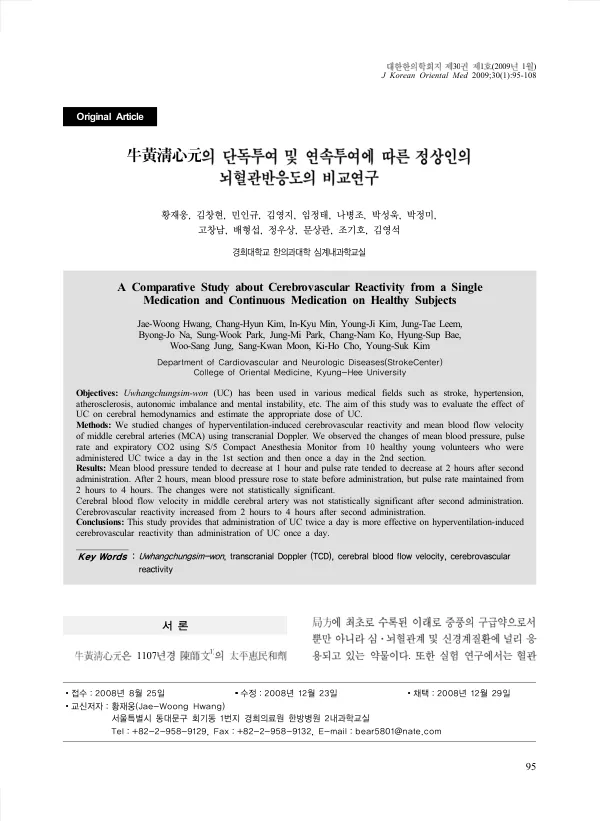

牛黃淸心元의 단독투여 및 연속투여에 따른 정상인의 뇌혈관반응도의 비교연구
Hwang Jw, Kim Ch, Min Ik, Kim Yj, Leem Jt, Na Bj, Park Sw, Park Jm, Ko Cn, Bae Hs, Jung Ws, Moon Sk, Cho Kh, Kim Ys
Journal of Korean Medicine 30(1):95-108

첫 장 · 오픈액세스First page · open access
논문 소개Summary
우황청심원은 뇌졸중과 고혈압, 동맥경화, 자율신경 불균형 등에 널리 쓰여 온 처방입니다. 이 연구는 뇌혈류에 미치는 영향을 보고 적절한 용량을 가늠하려 한 것입니다. 건강한 젊은 성인 열 명에게 1구간은 하루 두 번, 2구간은 하루 한 번 투여하고 경두개 도플러로 중대뇌동맥 혈류속도와 과호흡 유발 뇌혈관반응도를, 감시장치로 혈압과 맥박수를 쟀습니다. 두 번째 투여 뒤 평균혈압은 1시간째, 맥박수는 2시간째 낮아지는 경향을 보였으나 통계적으로 유의하지 않았고 중대뇌동맥 혈류속도의 변화도 유의하지 않았습니다. 뇌혈관반응도는 두 번째 투여 뒤 2시간에서 4시간 사이에 증가했습니다. 저자들은 하루 두 번 투여가 한 번보다 과호흡 유발 뇌혈관반응도에 더 효과적이라고 결론지었습니다.
Uwhangchungsim-won has been widely used for stroke, hypertension, atherosclerosis and autonomic imbalance. This study examined its effect on cerebral haemodynamics and sought to gauge an appropriate dose. Ten healthy young volunteers received the medicine twice daily in the first section and once daily in the second; transcranial Doppler measured mean blood flow velocity in the middle cerebral artery and hyperventilation-induced cerebrovascular reactivity, while an anaesthesia monitor recorded mean blood pressure, pulse rate and expiratory CO2. After the second administration, mean blood pressure tended to fall at one hour and pulse rate at two hours, but neither change was statistically significant, and changes in middle cerebral artery flow velocity were not significant either. Cerebrovascular reactivity increased between two and four hours after the second administration. The authors conclude that twice-daily administration is more effective than once-daily for hyperventilation-induced cerebrovascular reactivity.
인용Cite
Hwang Jw, Kim Ch, Min Ik, Kim Yj, Leem Jt, Na Bj, Park Sw, Park Jm, Ko Cn, Bae Hs, Jung Ws, Moon Sk, Cho Kh, Kim Ys. 牛黃淸心元의 단독투여 및 연속투여에 따른 정상인의 뇌혈관반응도의 비교연구. Journal of Korean Medicine. 2009;30(1):95-108.